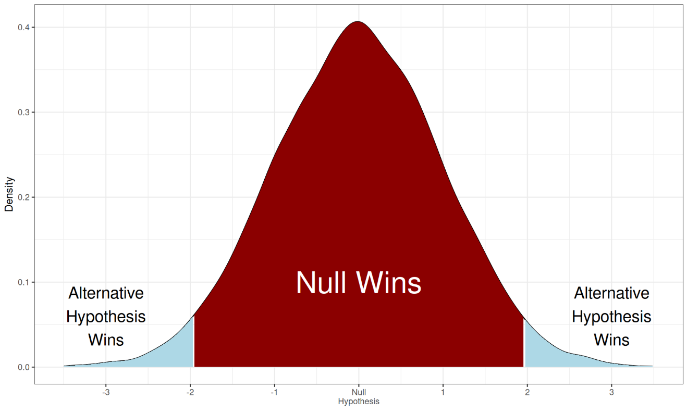
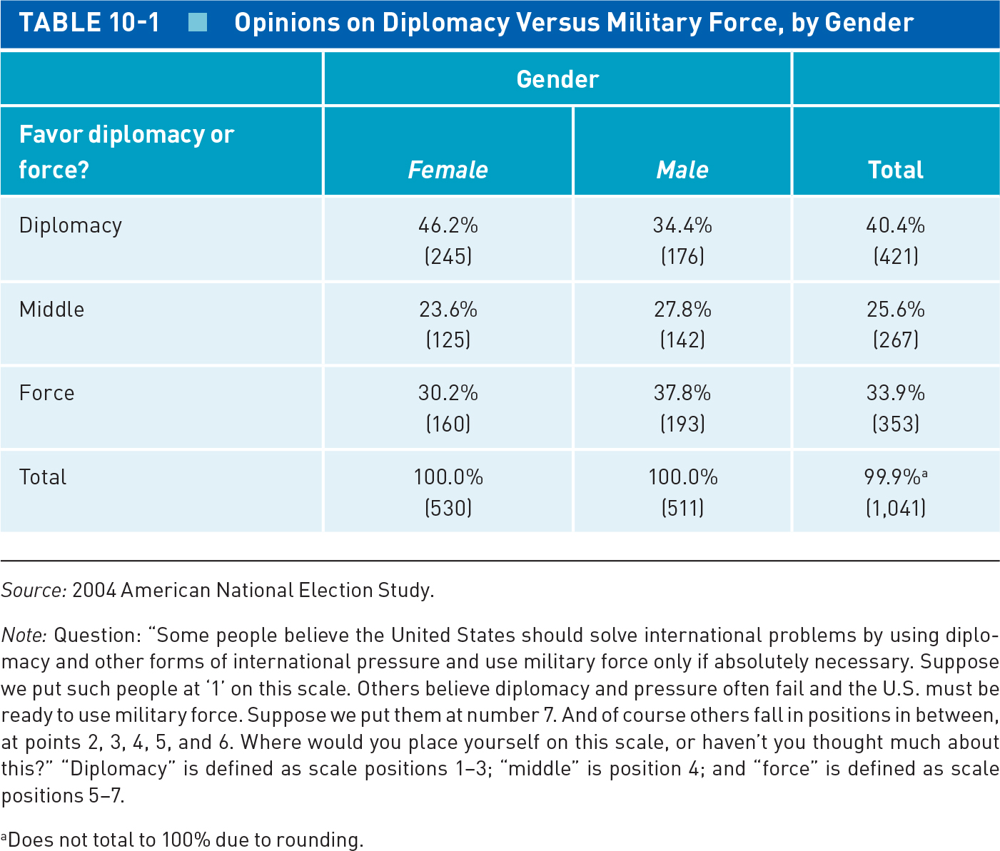
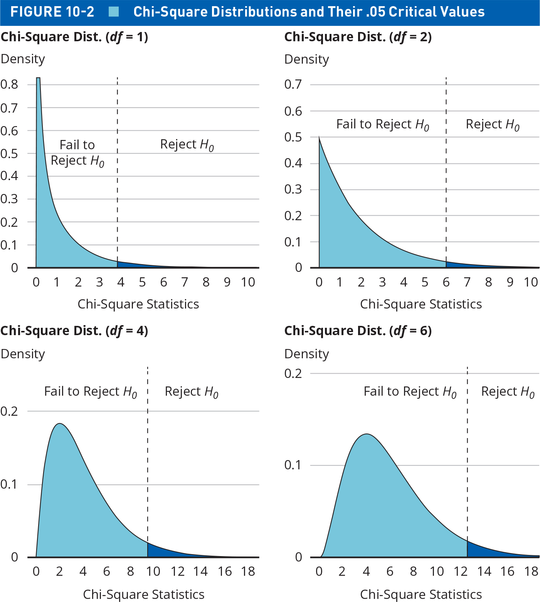
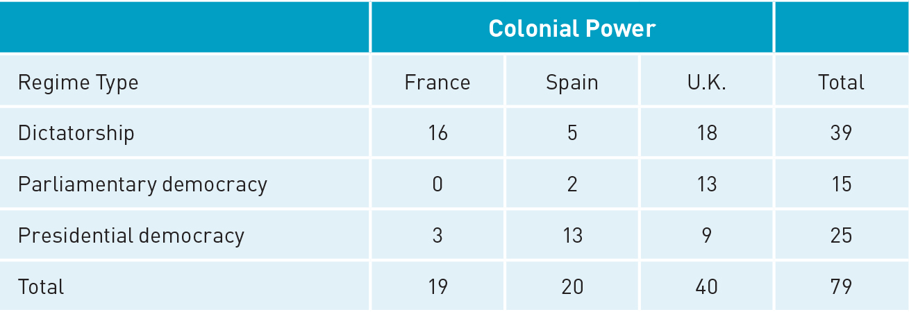
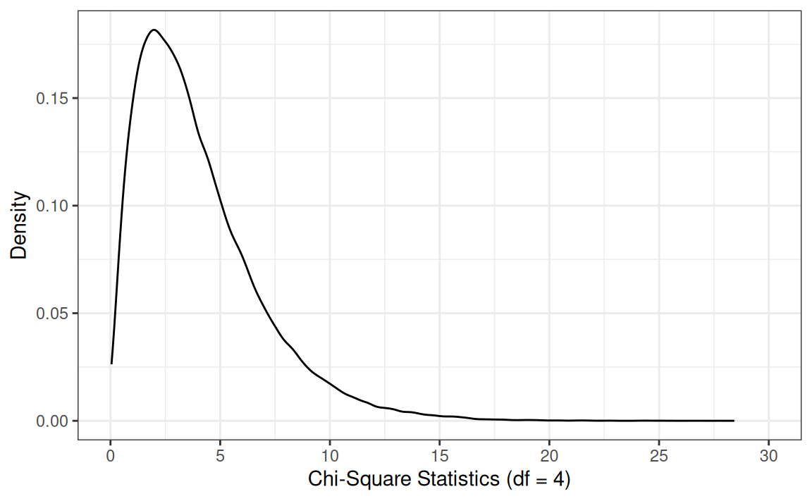
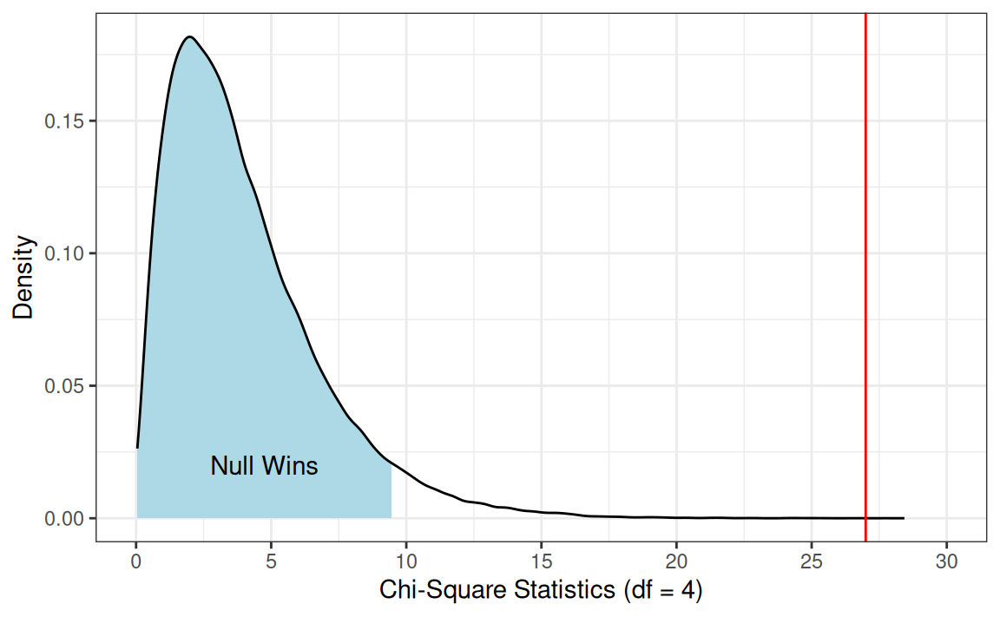

Today’s Agenda
Making Statistical Inferences
Justin Leinaweaver (Spring 2026)
Data Science: Level 2
Building causal arguments
Using samples to learn about the population

Causal Arguments and Controlled Comparisons
Inferential Statistics: Null Hypothesis Testing

Specify \(H_0\) and \(H_A\)
Set a significance threshold
Calculate sample statistics
Evaluate using p-value and/or CIs
Draw Conclusions
Inferential Statistics: Null Hypothesis Testing
Difference of Proportions
The Chi-Square Test of Independence

Degrees of Freedom
Degrees of Freedom
Degrees of Freedom
Imagine a hypothetical vector that meets two conditions:
\[ x = x_1, x_2, x_3, x_4 \tag{1} \]
\[ \bar{x} = 10 \tag{2} \]
You can essentially plug in ANY numbers you want for \(x_1\), \(x_2\), and \(x_3\) as long as you leave \(x_4\) for last
Degrees of Freedom
Imagine drawing a sample from a population and calculating the mean
We assume n-1 degrees of freedom so we can say:
- Population mean = sample mean + \(x_1\)
Null Hypothesis Testing with A Chi-Square Distribution

The Chi-Square Test of Independence
The distribution function for the chi-squared distribution
pchisq(q, df)
pchisq(q = 12.21, df = 4, lower.tail = FALSE)
pchisq(q = 10.1, df = 6, lower.tail = FALSE)
pchisq(q = 6.25, df = 2, lower.tail = FALSE)
pchisq(q = 4.75, df = 3, lower.tail = FALSE)
Exercise 3
\[ \chi^2 = \Sigma \frac{(f_o - f_e)^2}{f_e} \]

The Chi-Square Test of Independence
- Observed frequencies (\(f_o\))
| Dictatorship |
\(f_o\) = 16 |
\(f_o\) = 5 |
\(f_o\) = 18 |
39 |
| Parliamentary |
\(f_o\) = 0 |
\(f_o\) = 2 |
\(f_o\) = 13 |
15 |
| Presidential |
\(f_o\) = 3 |
\(f_o\) = 13 |
\(f_o\) = 9 |
25 |
| Total |
19 |
20 |
40 |
79 |
The Chi-Square Test of Independence
- Expected frequencies (\(f_e\))
| Dictatorship |
\(f_o\) = 16 \(f_e\) = 9 |
\(f_o\) = 5 \(f_e\) = 10 |
\(f_o\) = 18 \(f_e\) = 20 |
39 (49%) |
| Parliamentary |
\(f_o\) = 0 \(f_e\) = 4 |
\(f_o\) = 2 \(f_e\) = 4 |
\(f_o\) = 13 \(f_e\) = 8 |
15 (19%) |
| Presidential |
\(f_o\) = 3 \(f_e\) = 6 |
\(f_o\) = 13 \(f_e\) = 6 |
\(f_o\) = 9 \(f_e\) = 13 |
25 (32%) |
| Total |
19 |
20 |
40 |
79 |
The Chi-Square Test of Independence
- \(f_o\) - \(f_e\)
| Dictatorship |
\(16-9=7\) |
\(5-10=-5\) |
\(18-20=-2\) |
39 (49%) |
| Parliamentary |
\(0-4=-4\) |
\(2-4=-2\) |
\(13-8=5\) |
15 (19%) |
| Presidential |
\(3-6=-3\) |
\(13-6=7\) |
\(9-13=-4\) |
25 (32%) |
The Chi-Square Test of Independence
- \((f_o - f_e)^2\)
| Dictatorship |
\((16-9)^2 = 49\) |
\((5-10)^2 = 25\) |
\((18-20)^2 = 4\) |
39 (49%) |
| Parliamentary |
\((0-4)^2= 16\) |
\((2-4)^2 = 4\) |
\((13-8)^2 = 25\) |
15 (19%) |
| Presidential |
\((3-6)^2 = 9\) |
\((13-6)^2 = 49\) |
\((9-13)^2 = 16\) |
25 (32%) |
The Chi-Square Test of Independence
- \(\frac{(f_o - f_e)^2}{f_e}\)
| Dictatorship |
\(\frac{(16-9)^2}{9} = 5.4\) |
\(\frac{(5-10)^2}{10} = 2.5\) |
\(\frac{(18-20)^2}{20} = .2\) |
39 (49%) |
| Parliamentary |
\(\frac{(0-4)^2}{4} = 4\) |
\(\frac{(2-4)^2}{4} = 1\) |
\(\frac{(13-8)^2}{8} = 3.125\) |
15 (19%) |
| Presidential |
\(\frac{(3-6)^2}{6} = 1.5\) |
\(\frac{(13-6)^2}{6} =8.16\) |
\(\frac{(9-13)^2}{13} = 1.23\) |
25 (32%) |
The Chi-Square Test of Independence
- \(\Sigma \frac{(f_o - f_e)^2}{f_e}\)
| Dictatorship |
\(\frac{(16-9)^2}{9} = 5.4\) |
\(\frac{(5-10)^2}{10} = 2.5\) |
\(\frac{(18-20)^2}{20} = .2\) |
39 (49%) |
| Parliamentary |
\(\frac{(0-4)^2}{4} = 4\) |
\(\frac{(2-4)^2}{4} = 1\) |
\(\frac{(13-8)^2}{8} = 3.125\) |
15 (19%) |
| Presidential |
\(\frac{(3-6)^2}{6} = 1.5\) |
\(\frac{(13-6)^2}{6} =8.16\) |
\(\frac{(9-13)^2}{13} = 1.23\) |
25 (32%) |
\(\chi^2 = 5.4+2.5+.2+4+1+3.125+1.5+8.17+1.23 \approx 27\)
The Chi-Square Test of Independence
- \(df = (\text{ncol} - 1) \times (\text{nrow} - 1)\)
| Dictatorship |
\(\frac{(16-9)^2}{9} = 5.4\) |
\(\frac{(5-10)^2}{10} = 2.5\) |
\(\frac{(18-20)^2}{20} = .2\) |
39 (49%) |
| Parliamentary |
\(\frac{(0-4)^2}{4} = 4\) |
\(\frac{(2-4)^2}{4} = 1\) |
\(\frac{(13-8)^2}{8} = 3.125\) |
15 (19%) |
| Presidential |
\(\frac{(3-6)^2}{6} = 1.5\) |
\(\frac{(13-6)^2}{6} =8.16\) |
\(\frac{(9-13)^2}{13} = 1.23\) |
25 (32%) |
\(\chi^2 = 5.4+2.5+.2+4+1+3.125+1.5+8.17+1.23 \approx 27\)
\(df = (3-1) \times (3-1) = 4\)
The Chi-Square Test of Independence
\(\chi^2 \approx 27\), \(df = 4\)


# Our Chi-Square Test of Independence
pchisq(q = 27, df = 4, lower.tail = FALSE)
The Chi-Square Test of Independence
chisq.test(x)
- “x” a table of counts (cross-tab)
# A simple cross-tab
table(diamonds$clarity, diamonds$cut)
# The chi-square test of the cross-tab
chisq.test(table(diamonds$clarity, diamonds$cut))
The Chi-Square Test of Independence
\(H_A\): Does party ID (partyid3) influence how Americans view the threat from Russia (threat.from.russia)?
\(H_0\): Any difference in a perceived threat from Russia is due to random sampling error
\(H_A\): Does party ID (partyid3) influence how Americans view the threat from Russia (threat.from.russia)?
label | variable | Party |
|---|
1. Democrat | 2. Independent | 3. Republican |
|---|
Russian Threat | 1. Not at all | 3%
(77) | 6%
(149) | 4%
(95) |
2. A little | 10%
(247) | 15%
(365) | 17%
(394) |
3. A moderate amount | 24%
(618) | 32%
(790) | 36%
(808) |
4. A lot | 28%
(718) | 24%
(601) | 24%
(552) |
5. A great deal | 35%
(900) | 23%
(577) | 19%
(426) |
\(H_A\): Does party ID (partyid3) influence how Americans view the threat from Russia (threat.from.russia)?
label | variable | Party |
|---|
1. Democrat | 2. Independent | 3. Republican |
|---|
Russian Threat | 1. Not at all | 3%
(77) | 6%
(149) | 4%
(95) |
2. A little | 10%
(247) | 15%
(365) | 17%
(394) |
3. A moderate amount | 24%
(618) | 32%
(790) | 36%
(808) |
4. A lot | 28%
(718) | 24%
(601) | 24%
(552) |
5. A great deal | 35%
(900) | 23%
(577) | 19%
(426) |
chisq.test(table(anes$threat.from.russia, anes$partyid3))
Pearson's Chi-squared test
data: table(anes$threat.from.russia, anes$partyid3)
X-squared = 280.07, df = 8, p-value < 2.2e-16
The Chi-Square Test of Independence
\(H_A\): Does party ID (partyid3) influence how Americans view the threat from Iran (threat.from.iran)?
\(H_0\): Any difference in a perceived threat from Iran is due to random sampling error
\(H_A\): Does party ID (partyid3) influence how Americans view the threat from Iran (threat.from.iran)?
label | variable | Party |
|---|
1. Democrat | 2. Independent | 3. Republican |
|---|
Iran Threat | 1. Not at all | 5%
(134) | 7%
(181) | 2%
(47) |
2. A little | 16%
(419) | 18%
(436) | 10%
(227) |
3. A moderate amount | 36%
(911) | 32%
(794) | 27%
(603) |
4. A lot | 24%
(619) | 24%
(598) | 27%
(623) |
5. A great deal | 18%
(463) | 19%
(473) | 34%
(773) |
chisq.test(table(anes$threat.from.iran, anes$partyid3))
Pearson's Chi-squared test
data: table(anes$threat.from.iran, anes$partyid3)
X-squared = 317.06, df = 8, p-value < 2.2e-16
Analyzing the US States
“File” -> “Import Datatset” -> “From Excel”
- Pollock_Edwards-US_States.xlsx
Make sure to:
Name the object
Exclude “NA”
Analyzing the US States
\(H_A\): More religious states (religiosity3) will have fewer protections for LGBTQ residents (lgbtq.equality.3cat)
\(H_0\): Differences in religiosity do not explain the variation in protections for LGBTQ residents
Convert both into ordinal variables with factor()
Create a polished cross-tab of the relationship
Run a chi-square test of independence on the relationship
Analyzing the US States
label | variable | Religiosity |
|---|
Low | Mid | High |
|---|
LGBTQ Equality | Low | 18% (3) | 59% (10) | 94% (15) |
Medium | 12% (2) | 12% (2) | 6% (1) |
High | 71% (12) | 29% (5) | 0% (0) |
Pearson's Chi-squared test
data: table(states$Religiosity, states$`LGBTQ Equality`)
X-squared = 21.131, df = 4, p-value = 0.0002983
# 1. Convert the variables
states$`Religiosity` <- factor(states$religiosity3,
levels = c("Low", "Mid", "High"))
states$`LGBTQ Equality` <- factor(states$lgbtq.equality.3cat,
levels = c("Low", "Medium", "High"))
# 2. Output the table
crosstable(data = states, cols = `LGBTQ Equality`, by = `Religiosity`,
percent_pattern = "{p_col} ({n})", percent_digits = 0) |>
as_flextable(fontsizes = list(body = 19, header = 19))
# 3. Chi-square test
chisq.test(table(states$`Religiosity`, states$`LGBTQ Equality`))
For Next Class
Calculate a chi-square statistic by hand
Read Chapter 10, p268-273 (ANOVA)
Complete selected textbook exercises on ANOVA